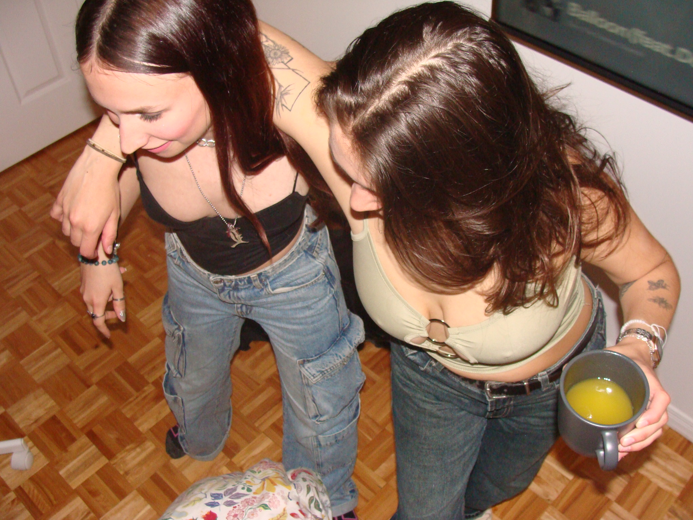
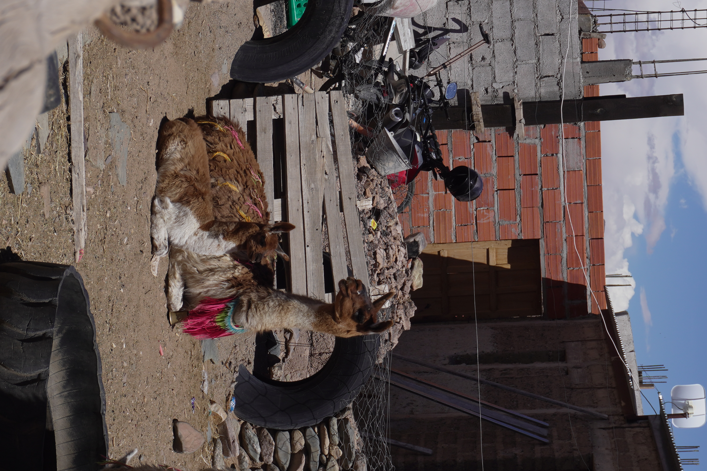
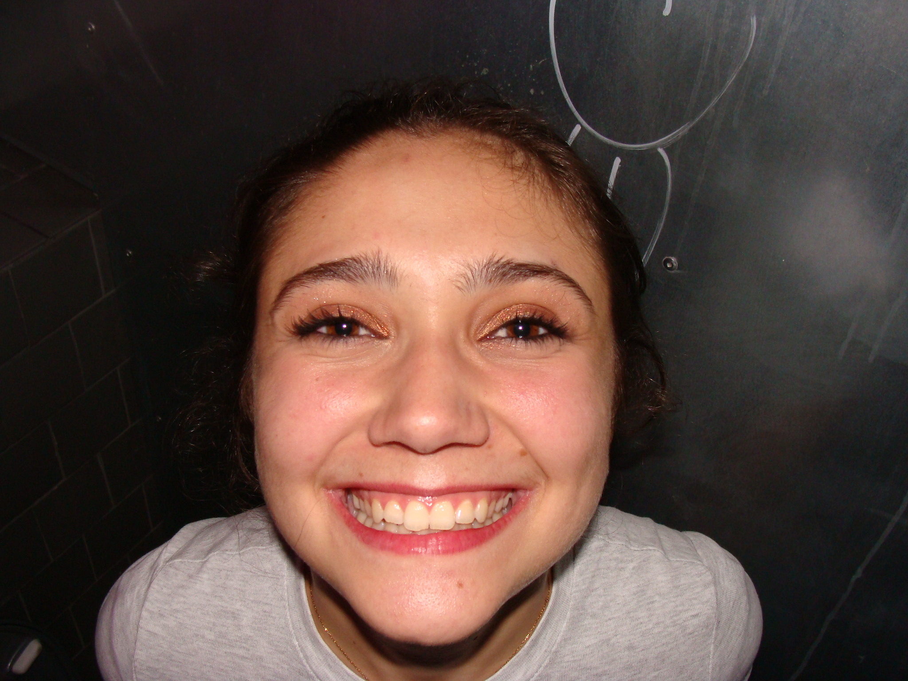
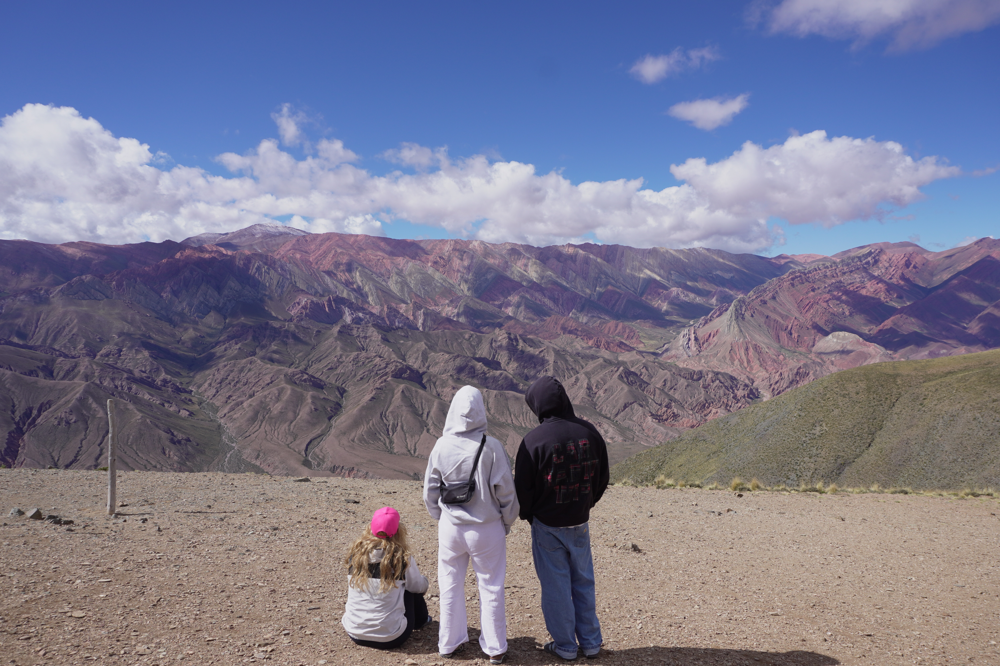
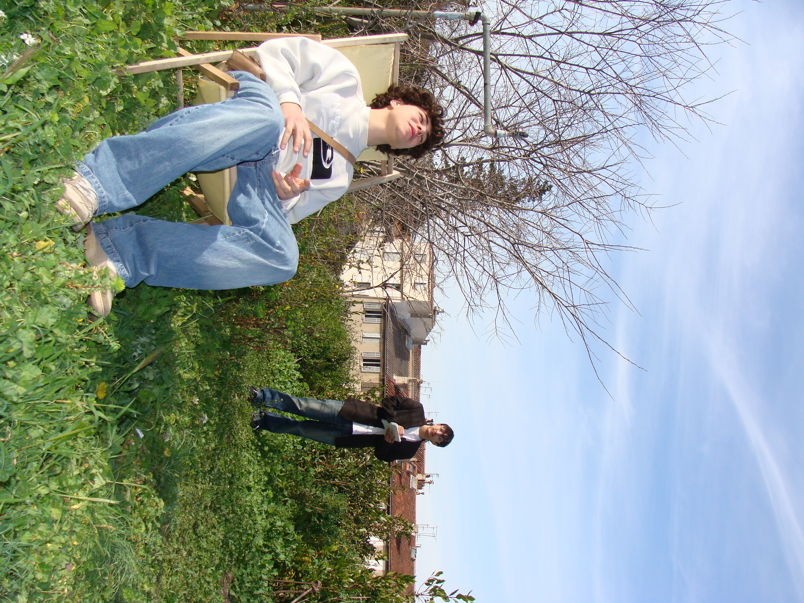
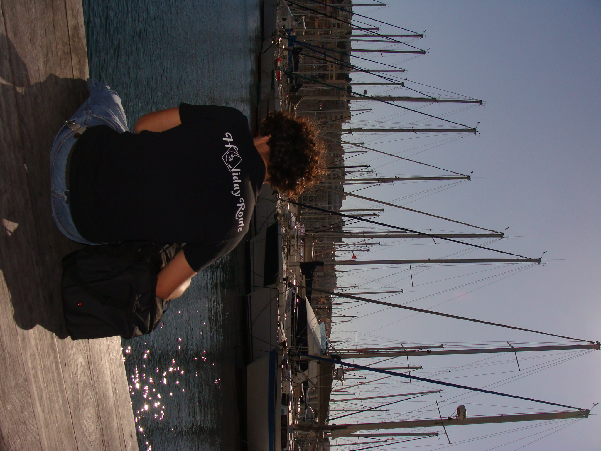
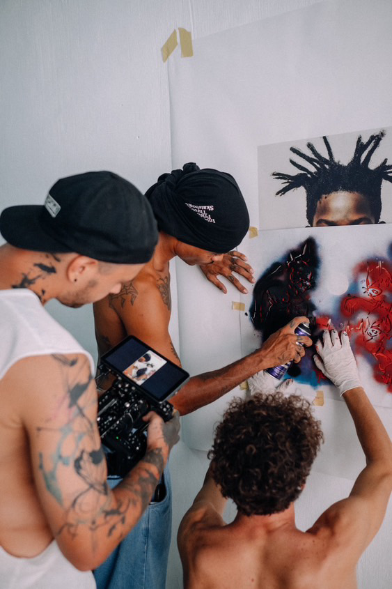

Derrière l’objectif
L’art est, à mon sens, là pour transmettre des histoires, des émotions et des souvenirs. Je n’ai que 21 ans, mais j’ai déjà eu la chance de vivre énormément de choses, notamment à travers mes voyages. C’est là que la photographie prend tout son sens pour moi : capturer des instants de vie, les graver dans ma mémoire et immortaliser ces petits détails que le temps aurait pu effacer. C’est aussi une manière de transmettre, de partager avec mes proches ce que j’ai vu et ressenti.
J’aime photographier les paysages, mais aussi les gens, les moments de vie de mes amis, de ma famille et parfois même d’inconnus, en saisissant furtivement ces instants spontanés, sans qu’ils s’en aperçoivent. J’ai rassemblé ici quelques-uns de mes clichés préférés, pris avec le vieil appareil photo de mon père, celui-là même qui nous photographiait, mon frère et moi, lorsque nous étions enfants. À travers ces images, je vous invite à découvrir mon univers, mes souvenirs et ma façon de regarder le monde.







